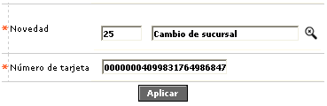

Ingreso de novedades tarjeta
Esta opción que se invoca desde el rol de emisor (issuer) permite hacer el llamado a los diversos formularios desde los cuales la entidad puede ingresar las modificaciones a la información relacionada con las tarjetas o créditos otorgados a los clientes, bien sea por solicitud de ellos mismos o por decisión autónoma de la entidad acorde con sus políticas internas.

A diferencia de la mayoría de los formularios, este no contiene opciones adicionales y está conformado por dos campos en los cuales se registran los datos requeridos por el sistema para el ingreso de la novedad.
Descripción de campos
Novedad |
Campo obligatorio con lista de valores del cual se selecciona la novedad que se desea aplicar a la tarjeta. |
Número de tarjeta |
En este campo obligatorio de hasta 23 posiciones se registra el número de tarjeta para la cual se desea ingresar la novedad. |
Una vez ingresados los datos requeridos y mediante el botón buscar, el sistema invoca el formulario correspondiente de acuerdo con el tipo de novedad seleccionada por el usuario.